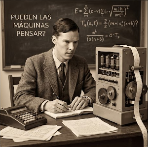
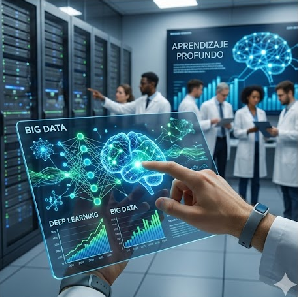

ÍNDICE
1. El Sueño del Autómata: De la mitología a la lógica matemática
2. 1956: El Big Bang de Dartmouth
3. La Montaña Rusa de la IA: Veranos de euforia e inviernos de olvido
4. El Cambio de Paradigma: De las reglas fijas al aprendizaje automático
5. La Era del Deep Learning: La revolución de los datos y la potencia
6. IA Generativa: El momento "ChatGPT" y la explosión creativa
7. Desafíos Éticos: El espejo de la humanidad
La Historia de la inteligencia artificial
1. El Sueño del Autómata: De la mitología a la lógica matemática
La génesis de la Inteligencia Artificial no se encuentra en los laboratorios de computación de mediados del siglo XX, sino en la raíz profunda de la psique humana y su anhelo ancestral por emular el acto creador. Desde la Antigüedad clásica, la humanidad ha proyectado su ingenio en figuras como Talos, el gigante de bronce autómata de Creta diseñado por Hefesto, o los sirvientes mecánicos descritos por Homero en la Ilíada, que poseían "mente y voz". En la Edad Media, figuras como Alberto Magno o Roger Bacon fueron acusados de nigromancia por intentar construir cabezas parlantes que respondieran preguntas complejas. Sin embargo, el tránsito de la mitología a la ciencia formal comenzó con la ambición de mecanizar el pensamiento racional a través de la matemática.
En el siglo XVII, filósofos y matemáticos como Blaise Pascal y Gottfried Leibniz dieron los primeros pasos críticos hacia la computación. Pascal inventó la "Pascalina", una calculadora mecánica de engranajes, mientras que Leibniz propuso la idea de un Calculus Ratiocinator: un sistema lógico universal donde cualquier disputa intelectual podría resolverse simplemente diciendo "calculemos". Leibniz fue el primero en vislumbrar que el pensamiento podía reducirse a una manipulación de símbolos binarios, sentando las bases de lo que hoy conocemos como computación digital.
Ya en el siglo XIX, el matemático británico George Boole formalizó la estructura lógica que permite que las máquinas "piensen" mediante su álgebra booleana, reduciendo las operaciones del pensamiento a estados de 1 y 0. A esto se sumó la visión de Ada Lovelace, la primera programadora de la historia, quien al trabajar con la Máquina Analítica de Charles Babbage, intuyó que estos dispositivos podrían procesar no solo números, sino música, arte o cualquier entidad simbólica. Finalmente, en 1950, Alan Turing publicó su histórico artículo Computing Machinery and Intelligence. En él, Turing no solo introdujo el Test de Turing, sino que predijo que para el año 2000 el almacenamiento informático permitiría crear máquinas capaces de aprender de forma autónoma. Turing propuso que la inteligencia no es una cualidad mística, sino una forma avanzada de procesamiento de señales, y que la mejor manera de lograrla no era programando reglas fijas, sino creando una "máquina niño" que aprendiera de su entorno.
 VOLVER AL ÍNDICE |
2. 1956: El Big Bang de Dartmouth
El nacimiento formal de la IA como disciplina académica ocurrió en un contexto de euforia tecnológica tras la Segunda Guerra Mundial, impulsado por el auge de la cibernética y la teoría de la información de Claude Shannon. En el verano de 1956, una habitación en el Dartmouth College reunió a un pequeño grupo de científicos visionarios que cambiarían la historia: John McCarthy, Marvin Minsky, Nathaniel Rochester y el propio Claude Shannon. El objetivo de esta cumbre era ambicioso y, visto hoy, asombrosamente ingenuo: partían de la base de que "cada aspecto del aprendizaje o cualquier otra característica de la inteligencia puede, en principio, ser descrito con tanta precisión que se puede construir una máquina para simularlo". Fue aquí donde McCarthy impuso el término "Inteligencia Artificial" para diferenciar el campo de la ingeniería de control y centrarse en la representación simbólica y lógica del conocimiento.
Durante este evento de ocho semanas, Allen Newell y Herbert Simon presentaron el Logic Theorist, un programa que asombró a los presentes al demostrar 38 de los 52 teoremas matemáticos de los Principia Mathematica de Russell y Whitehead. Incluso encontró una demostración más breve y elegante que la de los autores originales, lo que se consideró el primer "momento de genialidad" de una máquina. Este éxito inicial generó una confianza ciega en la IA Simbólica (también llamada GOFAI o Good Old Fashioned AI). Los fundadores creían que la inteligencia humana consistía en manipular símbolos mediante reglas lógicas explícitas.
El optimismo era tal que Marvin Minsky llegó a declarar que "el problema de crear inteligencia artificial se resolvería sustancialmente dentro de una generación". El gobierno estadounidense, a través de DARPA, comenzó a inyectar fondos masivos con la promesa de crear traductores automáticos perfectos que pudieran espiar las comunicaciones soviéticas en plena Guerra Fría. Se creía que bastaba con codificar un diccionario y unas reglas gramaticales para que una máquina entendiera cualquier idioma, subestimando por completo la importancia del contexto, la ironía y el sentido común en la comunicación humana.
VOLVER AL ÍNDICE |
3. La Montaña Rusa de la IA: Veranos de euforia e inviernos de olvido
La trayectoria de la IA se asemeja a una épica de auge y caída, marcada por ciclos económicos y académicos de gran volatilidad. Los años 60 fueron un "Verano de la IA", marcados por el desarrollo de sistemas que hoy nos parecen primitivos pero que en su momento fueron revolucionarios. En el MIT, Joseph Weizenbaum creó ELIZA, el primer chatbot que simulaba a un psicoterapeuta Rogeriano. Aunque ELIZA solo funcionaba mediante patrones gramaticales simples y sustitución de palabras, logró el "Efecto Eliza": los usuarios le atribuían sentimientos y comprensión profunda, llegando a pedir privacidad para hablar con la máquina. Otro hito fue Shakey el Robot, el primer autómata móvil que integraba visión artificial, procesamiento de lenguaje y planificación para mover objetos en una habitación.
Sin embargo, a principios de los 70, la tecnología chocó con la "explosión combinatoria": los problemas del mundo real eran tan complejos que el número de combinaciones posibles desbordaba la capacidad de cualquier ordenador. En 1973, el Informe Lighthill en el Reino Unido fue demoledor, calificando a la IA de "ciencia ficción fallida" y señalando que las máquinas no podían ni siquiera reconocer una cara en diferentes condiciones de luz. Esto provocó el primer "Invierno de la IA" (1974-1980): la financiación desapareció, los laboratorios cerraron y la disciplina fue marginada.
En los años 80, hubo un breve resurgimiento con los Sistemas Expertos. Empresas como Digital Equipment Corporation ahorraron millones utilizando programas como XCON, que contenían miles de reglas "Si-Entonces" extraídas de expertos humanos para configurar sistemas informáticos. Pero estos sistemas eran "frágiles": no podían aprender y colapsaban si una situación se salía mínimamente de su manual de instrucciones. Además, eran extremadamente costosos de actualizar. Cuando el mercado se dio cuenta de que estas máquinas no tenían "inteligencia real" sino solo una base de datos rígida, llegó un segundo y más profundo invierno a finales de los 80, donde incluso el término "IA" se convirtió en un tabú comercial que los investigadores evitaban para conseguir becas.
VOLVER AL ÍNDICE |
4. El Cambio de Paradigma: De las reglas fijas al aprendizaje automático
El renacimiento de la IA a mediados de los 90 no fue producto de mejores reglas lógicas, sino de un cambio de filosofía radical y el acceso a una potencia de cálculo sin precedentes: el paso de la IA Simbólica al Machine Learning (Aprendizaje Automático). Se abandonó el intento de "enseñar" a la máquina cómo es el mundo mediante instrucciones manuales (Top-Down) para permitir que la máquina "descubriera" el mundo por sí sola mediante el análisis estadístico de datos (Bottom-Up).
Un hito simbólico que marcó esta era fue la victoria de la supercomputadora Deep Blue de IBM sobre Garry Kasparov en 1997. Aunque Deep Blue no "pensaba" (usaba una técnica de búsqueda heurística de fuerza bruta para calcular 200 millones de posiciones por segundo), el impacto psicológico fue global: una máquina había derrotado al mayor genio del juego más humano. Sin embargo, el verdadero motor de este cambio fue el resurgimiento de las Redes Neuronales. Durante décadas, investigadores como Geoffrey Hinton, Yann LeCun y Yoshua Bengio habían sido ignorados por defender modelos inspirados en la estructura biológica del cerebro, ya que se consideraban ineficientes.
Con la llegada de Internet y la digitalización masiva, por primera vez hubo suficientes datos (imágenes etiquetadas, textos, registros financieros) para que estos modelos funcionaran. La IA dejó de basarse en reglas rígidas ("Si tiene bigotes y orejas puntiagudas, es un gato") para basarse en probabilidades matemáticas ("He analizado diez millones de fotos y este patrón de píxeles tiene un 99.8% de probabilidad de ser un gato"). Este enfoque permitió avances reales en el filtrado de spam, la clasificación de imágenes médicas y el reconocimiento de voz, campos que habían estado estancados durante cuarenta años porque las reglas humanas eran incapaces de capturar la infinita variabilidad de la realidad.
VOLVER AL ÍNDICE |
5. La Era del Deep Learning: La revolución de los datos y la potencia
A partir de 2010, entramos en la era actual, impulsada por la confluencia de tres factores críticos: el Big Data (la explosión de datos gracias a internet), el hardware avanzado (el uso de GPUs de videojuegos para cálculos masivos) y el perfeccionamiento de las Redes Neuronales Profundas (Deep Learning). Estas redes están inspiradas de forma lejana en la arquitectura de la corteza cerebral, con capas de "neuronas" digitales que procesan información de manera jerárquica.
Un momento definitorio fue en 2012, cuando una red neuronal llamada AlexNet ganó una competición de reconocimiento visual con una precisión asombrosa, superando a cualquier método anterior. Poco después, en 2016, DeepMind (una filial de Google) presentó AlphaGo, que venció al legendario Lee Sedol en el juego de Go. A diferencia del ajedrez, el Go requiere intuición y estrategia a largo plazo. AlphaGo no solo jugó mejor que el humano, sino que realizó movimientos que los expertos calificaron de "hermosos" y "nunca vistos en 3.000 años de historia del juego", demostrando que la IA podía generar soluciones originales.
VOLVER AL ÍNDICE |
6. IA Generativa: El momento "ChatGPT" y la explosión creativa
Si el Deep Learning nos dio máquinas capaces de reconocer el mundo, la IA Generativa nos ha dado máquinas capaces de imaginarlo. A finales de 2022, el lanzamiento de ChatGPT marcó un punto de inflexión social comparable a la invención de la imprenta o la llegada de internet. Basada en la arquitectura de "Transformadores", esta tecnología puede procesar trillones de palabras para entender no solo el significado, sino también el estilo, el tono y la intención del lenguaje humano.
Por primera vez, la IA ha cruzado la frontera de la creatividad, un territorio que creíamos exclusivamente nuestro. Herramientas como DALL-E, Midjourney o Claude son capaces de escribir ensayos, componer música, generar arte visual y programar código en segundos. Ya no estamos ante una herramienta que solo analiza; estamos ante un "copiloto" del pensamiento que está redefiniendo sectores enteros, desde la educación hasta la medicina, y que nos obliga a preguntarnos qué valor aporta el trabajo humano en un mundo donde la creación de contenido es prácticamente gratuita.
VOLVER AL ÍNDICE |
7. Desafíos Éticos: El espejo de la humanidad
Para concluir este recorrido, debemos entender que la IA actual no es una entidad consciente, sino un espejo de nuestra propia sociedad. Al alimentarse de datos históricos, la IA a menudo hereda y amplifica nuestros prejuicios (racismo, sexismo o clasismo), lo que plantea graves problemas de justicia social. Además, el problema de la "Caja Negra" —el hecho de que a veces ni sus propios creadores saben exactamente por qué la IA toma una decisión específica— genera una crisis de transparencia y responsabilidad.
Estamos en el umbral de una nueva era donde la soberanía de la información está en juego. Los deepfakes ponen en duda la veracidad de la imagen y el sonido, mientras que la automatización masiva amenaza con transformar el mercado laboral. La historia de la IA no es la historia de una victoria tecnológica, sino la historia de nuestra búsqueda de identidad. Al intentar crear máquinas que piensen como nosotros, estamos descubriendo, paso a paso, qué es lo que realmente nos hace especiales: la ética, la empatía y la capacidad de cuestionar el propio sistema en el que vivimos.
VOLVER AL ÍNDICE |


VOLVER AL INICIO |